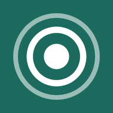

Thumbcast
Graj w gry z PC na telefonie.
Co robi aplikacja
Thumbcast przesyła gry z komputera z Windows na telefon z Androidem. Gra działa na PC, a telefon pokazuje obraz i przekazuje Twoje ruchy.
- Przyciski na ekranie w układzie Xbox albo PlayStation, albo sterowanie myszą i klawiaturą.
- Działa z padem podłączonym do telefonu; przyciski na ekranie chowają się, gdy grasz padem.
- Edytor układu przycisków i profile sterowania, zapisywane osobno dla każdej gry.
- Menu w grze: jakość obrazu, statystyki, sterowanie i zamykanie gry.
- Gra poza domem przez Tailscale, bez otwierania portów w routerze.
- Uczciwa gra: jeden dotyk to jedno wejście. Bez makr, turbo i naciśnięć na czas.
Szybki start
Około 20 minut, jednorazowo. Potrzebujesz PC z Windows z grą, telefonu z Androidem (8.0 lub nowszy) i obu urządzeń w tym samym Wi-Fi.
Thumbcast jest we wczesnym dostępie. Plik aplikacji (APK) jest na stronie wydań. Wersja w Google Play jest w przygotowaniu.
Część 1. Na PC (raz)
- Zainstaluj Sunshine
Sunshine to darmowy program, który wysyła obraz gry na telefon.
- Pobierz Sunshine i uruchom plik
Sunshine-Windows-AMD64-installer.msi(w sekcji Assets). - Przeklikaj instalator. Jeśli Windows zapyta o zaporę, wybierz Zezwól.
- Pobierz Sunshine i uruchom plik
- Ustaw hasło w Sunshine
- Otwórz w przeglądarce
https://localhost:47990. - Przeglądarka pokaże, że połączenie nie jest prywatne. To normalne. Kliknij Zaawansowane, potem Przejdź dalej.
- Wybierz nazwę użytkownika i hasło i zapisz je sobie.
- Otwórz w przeglądarce
- Zainstaluj sterownik pada
Dzięki niemu gry widzą telefon jako zwykły pad Xbox.
- Pobierz ViGEmBus, uruchom instalator
.exei zrestartuj PC, jeśli o to poprosi.
- Pobierz ViGEmBus, uruchom instalator
- Wybierz pada w Sunshine
- Na stronie Sunshine otwórz Configuration → Input.
- Ustaw emulowany typ pada na Xbox 360 (
gamepad = x360), zapisz i zrestartuj Sunshine, gdy o to poprosi. - Brak sterownika pada? Nadal możesz grać sterowaniem myszą i klawiaturą.
Część 2. Na telefonie
- Zainstaluj Thumbcast
- Pobierz APK ze strony wydań na telefonie i otwórz go.
- Android poprosi o zgodę na instalację z przeglądarki. Zezwól na tę jedną instalację.
- Znajdź swój PC
- Otwórz Thumbcast. Kreator przeprowadzi Cię przez te same kroki.
- PC pojawi się na ekranie głównym. Jeśli nie, sprawdź, czy oba urządzenia są w tym samym Wi-Fi i czy Sunshine działa, albo dotknij Dodaj PC i wpisz adres IP komputera.
- Sparuj (raz)
- Dotknij swojego PC. Telefon pokaże PIN.
- Na PC otwórz stronę Sunshine, wejdź w zakładkę PIN, wpisz PIN, nadaj telefonowi dowolną nazwę i naciśnij Send.
- Graj
- Dotknij Desktop albo Steam Big Picture i uruchom grę.
- Domyślne sterowanie to pad w stylu PlayStation na ekranie. Menu ☰ w grze zmienia profil, jakość i inne ustawienia.
- W ustawieniach samej gry wybierz okno pełnoekranowe (bez ramki) i włącz obsługę pada, jeśli gra ma taką opcję.
Część 3. Gra poza domem przez Tailscale (opcjonalnie)
- Najpierw zrób części 1 i 2 w domu
Sparuj telefon z PC w domowym Wi-Fi. Robisz to tylko raz.
- Zainstaluj Tailscale na PC
Tailscale to darmowa prywatna sieć między Twoimi urządzeniami. Nie trzeba nic otwierać w routerze.
- Pobierz Tailscale dla Windows, zainstaluj i zaloguj się (wystarczy konto Google, Microsoft lub Apple).
- Zostaw go włączonego. Startuje razem z Windows.
- Zainstaluj Tailscale na telefonie
- Zainstaluj Tailscale z Google Play i zaloguj się tym samym kontem co na PC.
- Włącz go (przełącznik u góry).
- Skopiuj adres PC w Tailscale
- W aplikacji Tailscale na telefonie dotknij swojego PC. Skopiuj jego adres, wygląda jak
100.x.y.z.
- W aplikacji Tailscale na telefonie dotknij swojego PC. Skopiuj jego adres, wygląda jak
- Dodaj adres w Thumbcast
- Na liście PC przytrzymaj swój PC → Adresy połączenia → Dodaj adres i wklej adres.
- Nie parujesz od nowa. W domu Thumbcast użyje Wi-Fi, a poza domem Tailscale.
- Wskazówki
- Tailscale musi być włączony na obu urządzeniach.
- Na danych komórkowych ustaw 720p lub 1080p przy 60 kl./s i bitrate 10–20 Mb/s (ustawienia Thumbcast).
- Nie przekierowuj portów w routerze.
Dodawanie własnych gier
Każda pozycja z zakładki Applications w Sunshine pojawia się w Thumbcast jako gra. Żeby dodać grę: otwórz stronę Sunshine (https://localhost:47990) → Applications → Add New, uzupełnij pola z poniższej listy, naciśnij Save i otwórz PC w Thumbcast od nowa.
Gra ze Steam
- Application Name: nazwa gry.
- Detached Commands:
steam://rungameid/<id gry>. Id gry to liczba w adresie jej strony w sklepie Steam.
Gra z Battle.net
- Detached Commands:
"C:\Program Files (x86)\Battle.net\Battle.net.exe" --exec="launch <kod>". - Kody gier:
WoWdla World of Warcraft;WoWFdla WoW: Forever (jeszcze niesprawdzone). Battle.net musi być zalogowany.
Dowolna inna gra (plik .exe)
- Command: pełna ścieżka do pliku
.exegry.
Ustawienia dla jednej gry
- W Thumbcast przytrzymaj grę → Ustawienia Thumbcast dla aplikacji. Możesz wybrać profil sterowania, rozdzielczość i liczbę klatek tylko dla tej gry.
Zamykanie gry z telefonu
Gry uruchamiane przez Steam albo Battle.net nie zamykają się same. W aplikacji w Sunshine otwórz Command Preparations → Add i wpisz taskkill /IM <plik gry>.exe w polu Undo. Nazwę pliku znajdziesz w Menedżerze zadań → Szczegóły.
Wtedy Zamknij grę na PC w menu Thumbcast zamknie też grę.
Coś nie działa?
- PC nie ma na liście: to samo Wi-Fi? Czy Sunshine działa (ikona przy zegarze)? Spróbuj Dodaj PC z adresem IP komputera.
- Gra nie widzi pada: zainstaluj ViGEmBus, ustaw pada Xbox 360 w Sunshine i zrestartuj PC. Albo przełącz się na profil myszy i klawiatury.
- Nie działa poza domem: sprawdź, czy Tailscale jest włączony na PC i na telefonie oraz czy adres jest dodany.
- Szczegóły dla zaawansowanych: host-setup.md, host-apps.md, tailscale.md. Błędy: GitHub issues.
Pełny poradnik jest zawsze w aplikacji: „Jak podłączyć PC” na ekranie startowym i w Ustawieniach → Pomoc.
Polityka prywatności
Obowiązuje od 12 listopada 2026.
Thumbcast nie ma konta, reklam ani analityki. Twórca aplikacji nie zbiera, nie otrzymuje i nie sprzedaje żadnych danych osobowych.
Dane zapisane na telefonie
Lista Twoich komputerów i ich adresy, certyfikat parowania, ustawienia i profile sterowania. Te dane nie opuszczają telefonu, poza przypadkami opisanymi niżej. Znikają po wyczyszczeniu danych aplikacji albo jej odinstalowaniu.
Połączenia sieciowe
- Twój PC: obraz, dźwięk i Twoje sterowanie idą bezpośrednio między telefonem a PC (w sieci lokalnej albo przez adres Tailscale, który dodasz).
- Serwery projektu Moonlight: Thumbcast bazuje na otwartym kliencie Moonlight i korzysta z dwóch jego publicznych serwerów pomocniczych.
stun.moonlight-stream.orgpodaje aplikacji publiczny adres Twojej sieci, gdy znajdzie ona PC, żeby dało się z nim połączyć później.android.conntest.moonlight-stream.orgsłuży do testu połączenia, gdy strumień nie wystartuje albo gdy dodajesz PC po adresie. Te serwery widzą Twój adres IP. Prowadzi je projekt Moonlight, nie twórca Thumbcast. - Linki: strony pobierania (GitHub, Tailscale) otwierają się w przeglądarce tylko po dotknięciu. „Wyślij link” używa menu udostępniania Androida i wysyła tylko to, co wybierzesz.
Uprawnienia
- Internet, stan sieci i Wi-Fi: do znajdowania komputerów w sieci lokalnej i łączenia się z nimi.
- Wibracje: wibracje pada na telefonie.
- Blokada uśpienia: ekran nie gaśnie podczas gry.
Dzieci
Thumbcast nie jest skierowany do dzieci.
Zmiany i kontakt
Zmiany tej polityki publikujemy na tej stronie. Pytania: zgłoszenia na GitHubie.
Otwarte źródła
Thumbcast to wolne oprogramowanie na licencji GNU GPL v3. Kod źródłowy: github.com/Serwur/thumbcast. Aplikacja bazuje na Moonlight dla Androida (GPLv3) i nie jest powiązana z projektami Moonlight ani Sunshine.